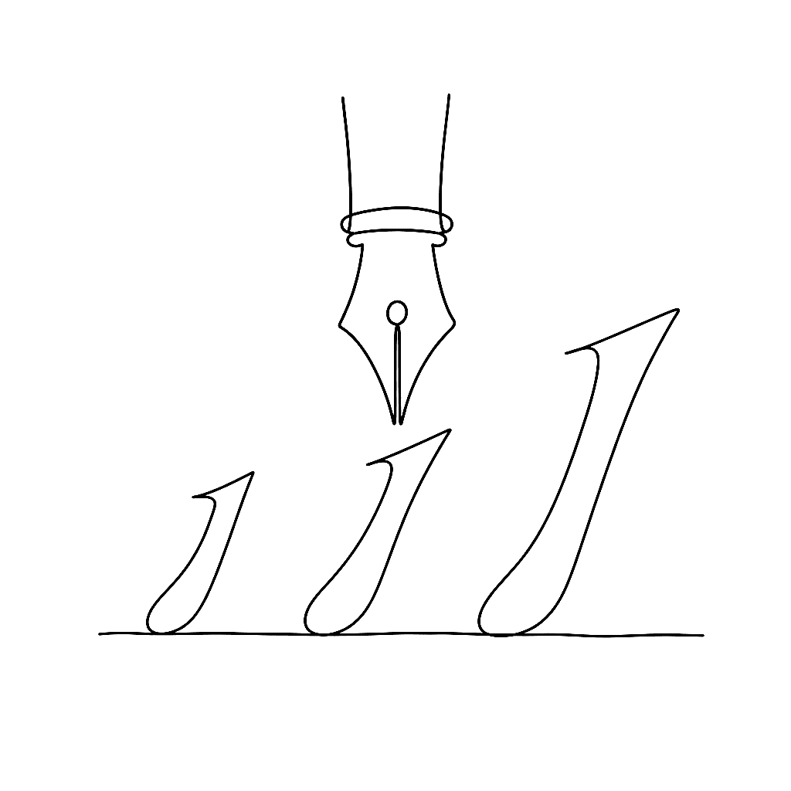

Calligraphic fonts: spacing, italics, and family planning

Once your letterforms are drawn, the work shifts to spacing, quality control, and — if you’re ambitious — building a family. This post distills Dave Lawrence’s chapters on fitting and spacing, building italic variants, and planning a type family in FontLab 8.